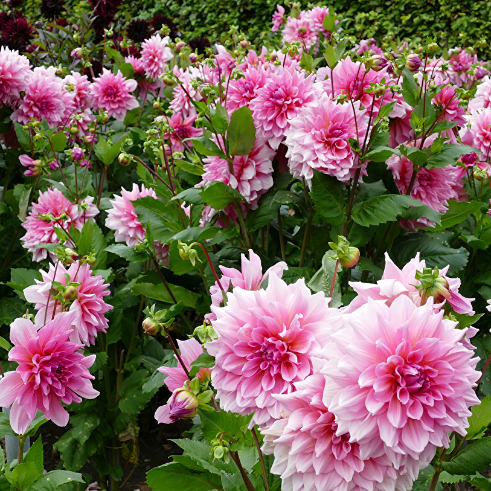

Цветы ещё с древности имеют важнейшее значение в культуре большинства народов. Где-то они используются для украшения, где-то служат знаком внимания, а где-то и вовсе почитаются, как, например, в некоторых странах Африки. Казалось бы — это ведь всего лишь органы размножения растений, но человечество сделало из них настоящий культ, и уже многие сотни лет в большинстве уголков Земли букет цветов является прекрасным подарком для друзей и близких. Именно поэтому на этом сайте вы сможете найти информацию о разных цветах. Просто выберите цветок понравившегося цвета или листайте вниз!
Красные цветы
РОЗЫ
Цветок роза – символ красоты, поскольку утонченность его нежных лепестков гармонично сочетается с острыми шипами. Роза является представителем семейства Разноцветных, рода Шиповник. Растение в большинстве случаев представляет собой разветвленный кустарник, стебли которого покрыты шипами, роза имеет зеленые листья и большие ароматные цветы самого разного окраса.

МАКИ
Мак - красивое и неприхотливое садовое растение. Цветы мака - яркие, шелковистые, простые или махровые, бывают красного, белого, бледно желтого, розового, оранжевого и даже черного цвета. Мак - легкий в выращивании цветок. Посеянные или посаженные однажды в саду, маки будут разрастаться и пышно цвести годами.
ТЮЛЬПАНЫ
Тюльпаны - многолетние травянистые луковичные растения семейства лилейных. Они заслуженно пользуются широкой популярностью и распространены во всех странах с умеренным климатом. Тюльпаны являются наиболее красивоцветущими среди весенних цветов и к тому же относительно неприхотливы в культуре. Самые распространенные – это красные.
Розовые цветы
ПИОНЫ
Луковичное растение, относится к семейству Пионовые. Пионы очень яркие, эффектные и пышные цветы. К тому же пионы обладают яркой сочной зеленью и сильным насыщенным ароматом. Пионам более 2000 лет, родиной первых цветов считается Азия( Китай), южная Европа и запад северной Америки. В Китае ещё 1500 лет назад древовидный пион украшал императорские сады.
АСТРЫ
Витиеватые и трудно выговариваемые имена астры, возможно, знает и не каждый, а вот ее яркая внешность известна практически всем. Астра новоблельгийская представляет собой многолетнее травянистое растение, которое растет в форме раскидистого плотного куста высотой 50–150 см. Ее стебли изрядно облеплены небольшими вытянутыми листочками ланцетной формы.
ГЕОРГИНЫ
Цветы георгины – яркие цветки декоративного растения, которые растут на пышных кустах. Георгин является представителем Сложноцветных. Георгины называют «цветами уходящего лета», поскольку пестрые цветки на них появляются осенью. Родиной георгин считается Мексика. На сегодняшний день известно более 15 тысяч сортов этого растения.

Желтые цветы
НАРЦИССЫ
Нарцисс – это весенний цветок, и, к сожалению, насладиться его красотой можно совсем недолго. Но зато луковицы этих растений могут сохраняться в земле по 5-8 лет, и без всяких усилий весной города снова украсят маленькие «солнышки» нарциссов с белыми или желтыми лепестками. А если успеете, можно успеть собрать букет, и они долго будут стоять в срезке.
ПОДСОЛНУХИ
Однолетнее растение, представитель семейства Астровых. Представляет собой прямой стебель с листьями и цветками, собранными в корзинку. Родиной растения ученые считают Северную Америку. Впервые его одомашнило племя североамериканских индейцев. Они культивировали это травянистое растение более 2000 лет назад.
МИМОЗА
Цветение мимозы ассоциируется у многих с приходом тепла и наступлением весны. Именно ее начинают предлагать в торговых точках к Международному женскому дню. Яркие желтые шарики на нежных ветвях смотрятся очень трогательно на фоне еще не сошедшего снега. Это растение относится к семейству бобовых или акациевых.
Фиолетовые цветы
ИРИСЫ
Ирис – декоративное растение, представитель семейства Касатиковых. Родиной этого цветка ученые считают Азию. Встречается ирис еще в Европе и на территории Северной Америки. Ирисы считаются одними из самых красивых и распространенных цветов. Растение представляет собой прямой стебель с плоскими листьями и большими цветками.
ЛАВАНДА
Лаванда - вечнозеленый полукустарник до 80 см в высоту. Карликовые разновидности составляют до 30 см в высоту, а гиганты – до 2 м. У растения узкие листья с бледно-серыми, голубыми, розовыми или фиолетовыми цветками. Для пищевых и медицинских целей используют все части, но прежде всего цветки, которые содержат большое количество эфирного масла.
КОШАЧЬЯ МЯТА
Достаточно высокие кусты, неприхотливые и отлично приспособленные к нашим климатическим условиям. Произрастает кошачья мята в лесах, садах, на пустырях, холмах. У растения угловатый стебель, а форма листочков очень похожа на карточную масть «пика». Цветы собраны в кисти, они мелкие, цвет варьируется от белого до светло-фиолетового или розового.
Голубые цветы
ДЕЛЬФИНИУМ
Дельфиниум – травянистая однолетняя или многолетняя культура, принадлежащая к семейству Лютиковых. Его название произошло от греческого города Дельфы, где произрастал цветок. На Руси его называли шпорником, другое его название – живокость. Привлекательное растение быстро завоевало популярность среди цветоводов.
МУСКАРИ
Мускари относится к луковичным растениям семейства Гиацинтовых. Всего насчитывается около 60 видов мускари. В природе мускари растут в степях, в горах на открытых склонах, на опушках леса, среди кустарников и на альпийских лугах. Цветы мускари невелики по размеру. А сами соцветия состоят из множества мелких цветочков, собранных в плотную верхушечную кисть.
НЕЗАБУДКИ
Название этого цветка состоит из двух греческих слов, которые означают «мышь» и «ухо». У некоторых видов листья имеют густое опушение в виде коротких волосков, отчего появляется схожесть с ушками мышей. У разных народов существуют различные легенды, связанные с этим цветком, но их все объединяет понятие о верности и доброй памяти.
Белые цветы
РОМАШКИ
Это абсолютно неприхотливое растение, цветущее в первый год жизни. Имеет тонкий стебель и узкие зеленые листья. Цветки состоят из яркой желтой сердцевины и вытянутых белоснежных лепестков. Они собраны в корзиночки, благодаря чему цветение кажется пышным. Ромашка вырастает до 60см. Она растет на любых почвах, переносит многие неблагоприятные факторы.
ФЛОКСЫ
Многолетние травянистые растения с пышными душистыми соцветиями разнообразной окраски. Флоксы очень декоративны, ценятся в цветоводстве за пышное продолжительное цветение, неприхотливость в уходе. Популярны в культуре как высокорастущие виды и сорта, так и вечнозеленые растения, которые украшают цветники своими пестрыми подушками-коврами.
ПЦИТЕМЛЕЧНИК
Является одним из самых популярных в культуре видов растения, который в дикой природе обитает в лесах Малой Азии, Западного Средиземноморья, Средней и Западной Европы. Высота растения около 25 см, листья линейные, желобчатые, с белесой продольной полосой. Белые цветки до 2,5 см диаметром с широкой зеленой продольной полосой собраны в соцветия-зонтики.
Разноцветные цветы
ФИАЛКИ
Занимает первое место в мире среди комнатных растений. Фиалка олицетворяет приход весны, оживление природы. Цветет фиалка девять месяцев в году, независимо от времени года. Совершенно не прихотлива, не требует яркого освещения, хорошей земли, крупных горшков. Запах фиалок оказывает великолепное действие одновременно на тело.
АЛЬСТРОМЕРИИ
Невероятно красочные и чувственные бутоны альстромерии пользуются огромной популярностью среди флористов и покупателей. Уникальность растения заключается в том, что визуально бутоны похожи на лилию, но расположение лепестков больше напоминает орхидею. Несмотря на необычайную красоту альстромерии, ее листья и стебли ядовитые.
ПЕТУНИИ
Петуния - многолетнее полукустарниковое или травянистое растение, используемое в садовой культуре как однолетник. Стебли стелющиеся или прямостоячие. Листва расположена в супротивно или в очередном порядке, мягкая. В культуре применяют Петунию садовую - гибриды, исходными для которых стали петуния пазушная и фиолетовая.